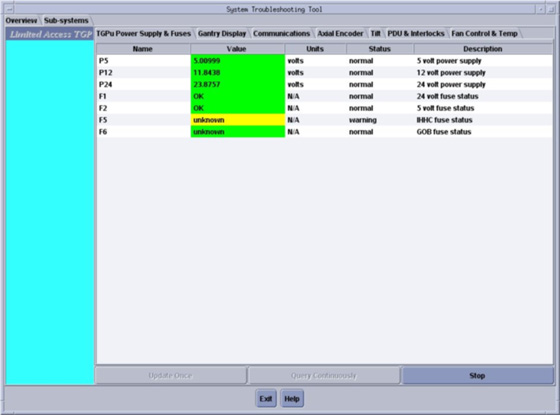

| NOTE: | To display data using System Troubleshooting Tool, system must be operational, and some displays require system scanning to depict changes in data results. |
| NOTE: | If gantry is powered off while System Troubleshooting Tool is active, a Reset message is displayed. Follow on-screen instructions to recover. |
Illustration 1: System Troubleshooting Tool
